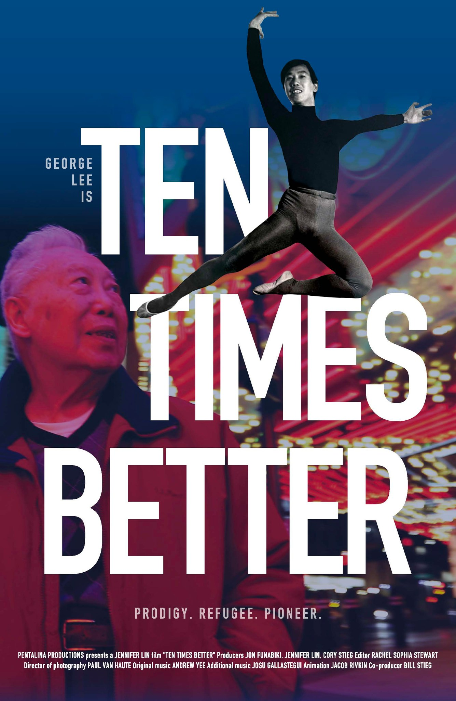

For the short documentary film Ten Times Better, I animated two hand-drawn segments featuring George Lee's rigorous dance training in Shanghai as a young child and later in New York, showing the ballet move which no one else could perform. Work included storyboarding, animation, and color.
Film Synopsis
George Lee is an 88-year-old blackjack dealer who still works five days a week, a beloved figure in the pit of a downtown Las Vegas casino. None of the card players—and few of his coworkers—know of this humble man’s astonishing background: a child dance prodigy and refugee from Shanghai who became a teenage sensation in the original staging of George Balanchine’s The Nutcracker exactly 70 years ago, performing the “Tea” divertissement. George’s story is uniquely American: an immigrant striving to prove himself as an Asian pioneer in ballet and on Broadway, where he was cast by Gene Kelly for the original production of Flower Drum Song. The film is a tale of talent and perseverance in the face of hardship, and a reminder of the extraordinary stories behind the nameless faces all around us.
Produced and directed by Jennifer Lin, and produced by Jon Funabiki and Cory Stieg.
The film premieres at Lincoln Center during the Dance on Camera Festival on Feburary 10, 2024.
Selected Images and GIFs
George Lee growing up in Shanghai, carried by him Mom.

George Lee training with Russian dancers.

George Lee performing a double tours.
George Lee in mid-air.
Film Poster